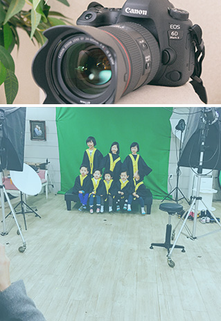
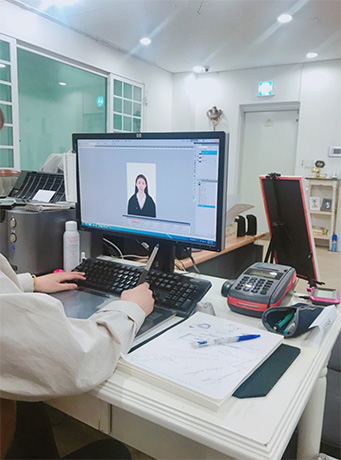
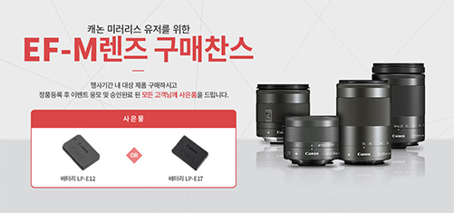

꿈꾸는 디자이너 김지선입니다.
2
이름 : 김지선
나이 : 25살
메일 : kjs131466@gmail.com
거주지 : 지하철, 버스 멀티교통러 구리시 인창동
학력 : 동서울대학교 디지털방송미디어학과 전공
취미 : 피아노 또는 기타치기, 게임하기
특징 : 생각보다 잘 먹는다.
2
디자인을 처음 접한건 대학교 영상디자인과에 진학을 하고 나서부터
였습니다. 처음으로 기초로 포토샵과 일러스트 를 배우게 되면서 디자인
이라는 개념에 좀 더 흥미가 생기고 에프터이펙트와 파이널컷 등 여러
영상편집 프로그램을 사용하면서 영상디자인에 서서히 눈을 뜨게 되었습니다.
아무래도 영상디자인이다보니 과제의 90%가 팀작업이었고 아이디어
도출부터 기획,촬영,편집,수정, 최종영상이 나오기까지 의견 충돌도 많이
겪고 팀원들과 선전수전 모든 시련을 겪으면서 밤낮 구별없이 과제작업에
몰두했습니다. 여러 영상을 만들면서 힘든 시간이었지만 그만큼 보람차고
팀간의 커뮤니케이션 능력의 중요성을 알게되는 뜻깊은
시간으로 남게 되었습니다.
2
대학교 졸업 후 젊음의 패기로 취업의 길로 뛰어 들었습니다. 하지만 그 길도 평탄하지는 않았고 이리저리 방황하다
사진촬영 스튜디오에 취업해서 사진촬영과 편집작업을 하게 되었습니다. 모든 일은 처음은 다 힘들다는 말이 있지만 낯선 타블렛과 친
해지고 디테일하게 사진을 보정하는 포토샵의 다른 면도 볼 수 있게되고 나서는 점점 일에 흥미가 붙어 일도 재밌어지고 점점 보정하는
시간도 효율적으로 발전하는 결과를 얻어 뿌듯했습니다. 또 손님분들이 좋아해 주시는 모습을 보면 일이 힘들다는생각이 민들레 씨가
바람에 날아 가듯이 훌훌 날아가는 기분도 좋았습니다. 그렇게 1년 7개월 동안 일하고 저는 여기서 멈추는 건 아쉽다 생각해 디자인 전
공을 좀 더 살릴 수 있는 방법이 무엇이 있을까 생각하다가 우연히 웹디자이너라는 직업을 알게되 배우고 지원하고 싶은 마음에 이렇게
포토폴리오를 만들게 되었습니다.
- 
- 
2
글로벌 식품기업이라 불리는만큼 선두주자인 농심
이미지를 한층 더 업그레이드 시켜줄 기업 홈페이지
리뉴얼 프로젝트를 진행하였습니다.
2
디자인을 해오면서 영상디자인할 때는 탐앤탐스 영상 공모전에서 수상도 해보고 그 이후에도
이벤트 페이지디자인을 하며 다방면의 디자인을 경험하며 앞으로도 좀 더 풍부한 표현력을 가진 디자이너가 될 수 있도록 노력하고 있습니다.
- 
2
그동안의 많은 디자인 경험을 하면서 그만큼 저에게 디자인은 뗄 수 없는 존재라는 것을 느꼈습니다.
그리고 저의 디자인의 폭을 좀 더 넓힐 수 있는 웹디자인이 될 수 있는 기회를 잡으려고 합니다.
많은 시행착오를 겪으면서 넘어져도 다시 일어 날 수 있는 힘을 길렀고 앞으로도 더 당당하게 걸을 수 있는 디자이너가 되겠습니다.